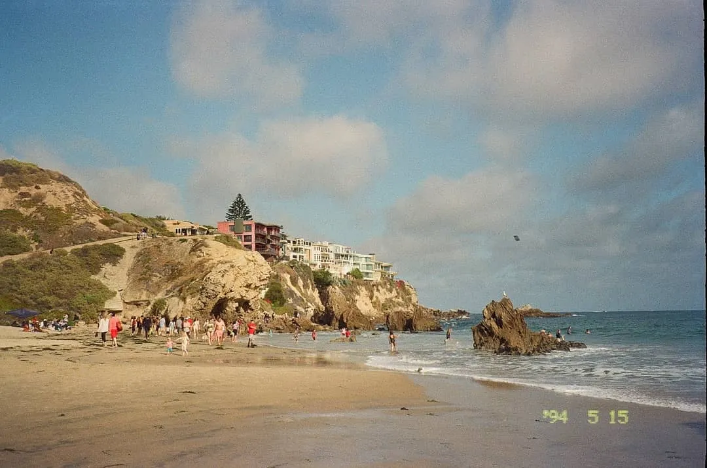

My Favorite Day Trips from UCI
March 3, 2022
Ever wondered what UC Irvine students do on a day off? As a student currently attending UCI, I'd like to share my top five choices for quick day trips.
1. Corona Del Mar beach
Corona Del Mar beach, photographed in May 2021.
Going to the beach is the perfect way to spend the day, and Corona del Mar is one of my
favorites. The rock formations have small sea anemones that you can check out up close. Near the
parking lot, you can also find rock formations that lead to a small cove if you climb over them.
Note: parking here isn't cheap, but street parking is a great — and free — option.
Plus, Corona del Mar is only a 15 minute drive from UCI's campus, and there's more to do than
just go to the beach! Shops and restaurants line Highway 1, plus you can visit Sherman Library
and Gardens if you're looking to explore a botanical garden (and admission is only $5.00).
2. Laguna Beach hiking trails
Laguna Beach is full of coastal hiking spots and only a 15-20 minute drive from campus. It's a
great way to exercise with a great view of the Orange County coast! I'd recommend the El Moro
Canyon Loop Trail, which has shorter and longer variations.
Plus, Laguna is home to many great places to eat, like Urth Caffé. It's pricey, but great for a
special occasion breakfast!
3. Santa Ana Zoo
In 2019, the Santa Ana Zoo welcomed a baby anteater to their family. ZOT ZOT ZOT! Visit the great UCI mascot at this wonderful zoo, which is just 10 miles from campus. It's also budget-friendly! As of September 2022, a General Admission ticket for adults is only $12.00. Learn more at SantaAnaZoo.org.
Photo by David Waite on Unsplash.
4. Aquarium of the Pacific
If you're looking for a full day of activity, take a trip to the Aquarium of the Pacific in Long Beach. The indoor exhibits are divided by region, like Northern Pacific, Tropical Pacific, and Southern California / Baja. It's cool to see what kind of animals are swimming amongst us here in SoCal!
the seals & sea lions exhibit; large model of a whale.
They also have outdoor exhibits, like the seals & sea lions tank and the shark exhibit. You can also get a hands-on experience at their Moon Jelly touch tank! (Don't worry, it doesn't harm the jellies.)

Moon Jelly touch tank — they're so soft!
5. Downtown Disney
Finally, check out Downtown Disney to get the Disney experience without purchasing an expensive
ticket! I should mention you need to pay for parking here, but the cost is lowered if you get it
validated at a restaurant.
My go-to activities are to shop around in World of Disney and get a good meal somewhere. There
are lots of restaurants to choose from, but my favorite is the Italian place — Naples. Also,
make sure to get ice cream at Salt & Straw, which is known for their unique flavor options.
A band usually sets up in the evenings near the Downtown Disney entrance and plays live music.
Plus, stick around until 9pm (subject to change) for the fireworks inside Disneyland, which you
can get a good view of from the Wetzel's Pretzels shop.
Overall, the vibes here are great if you grew up watching Disney movies or went to Disneyland as
a kid. Disney songs are playing from the speakers 24/7, so it can feel very nostalgic. I always
enjoy hanging out here!
Thanks for reading, and happy exploring!